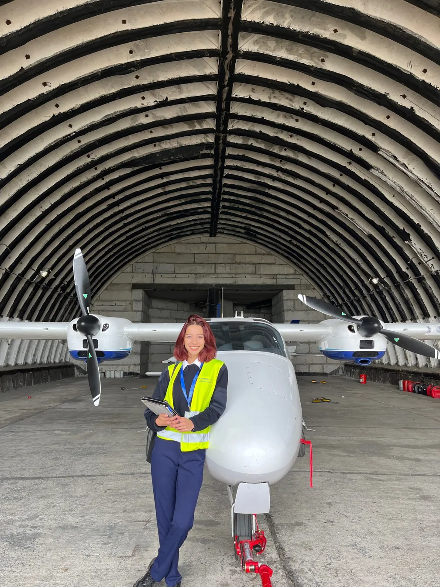
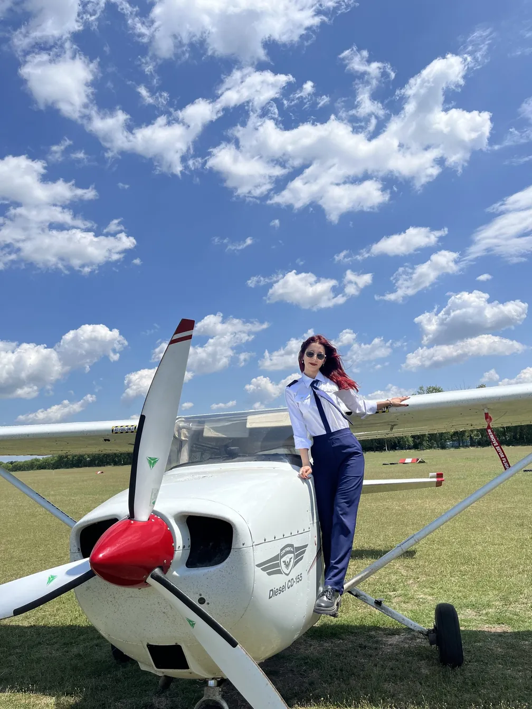
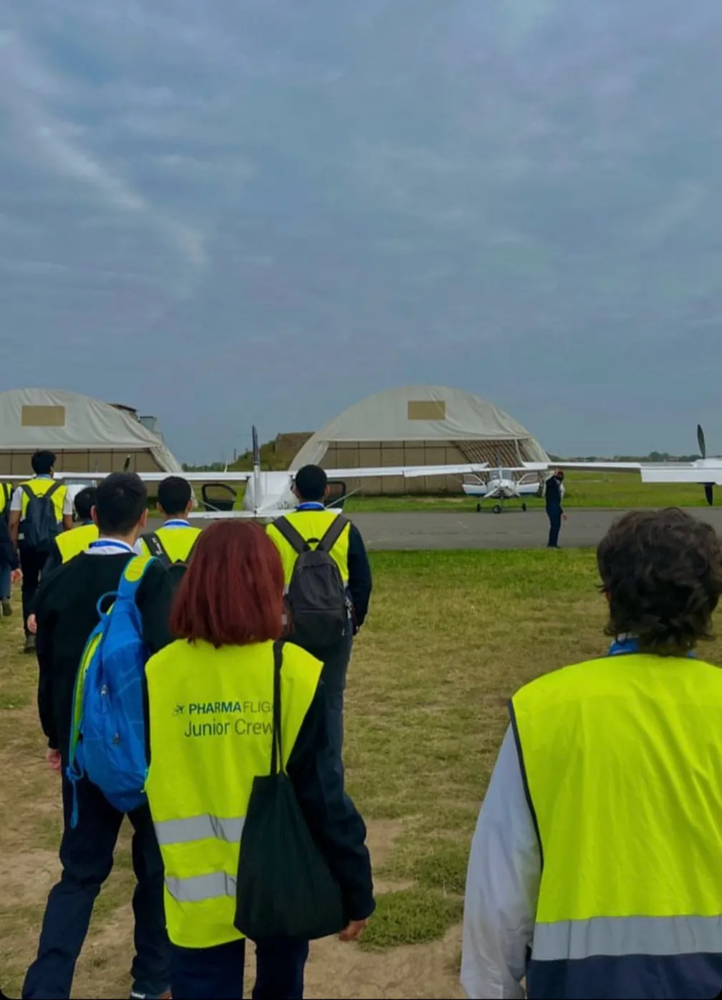
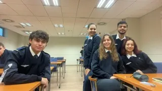
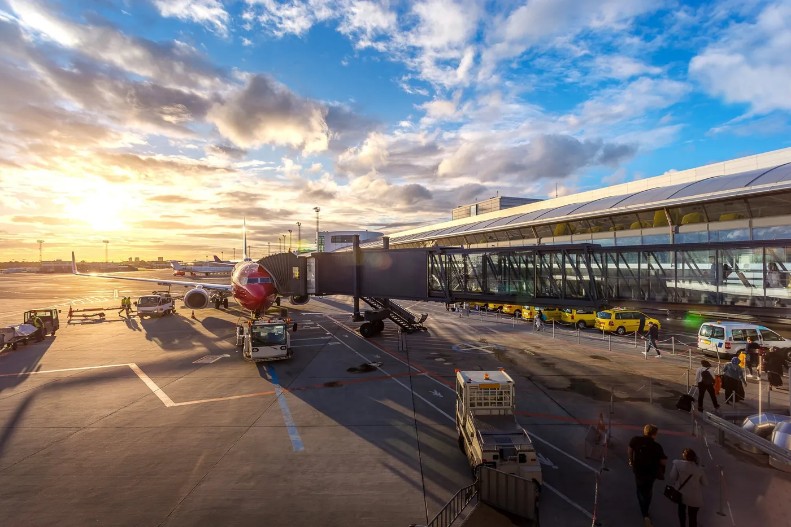
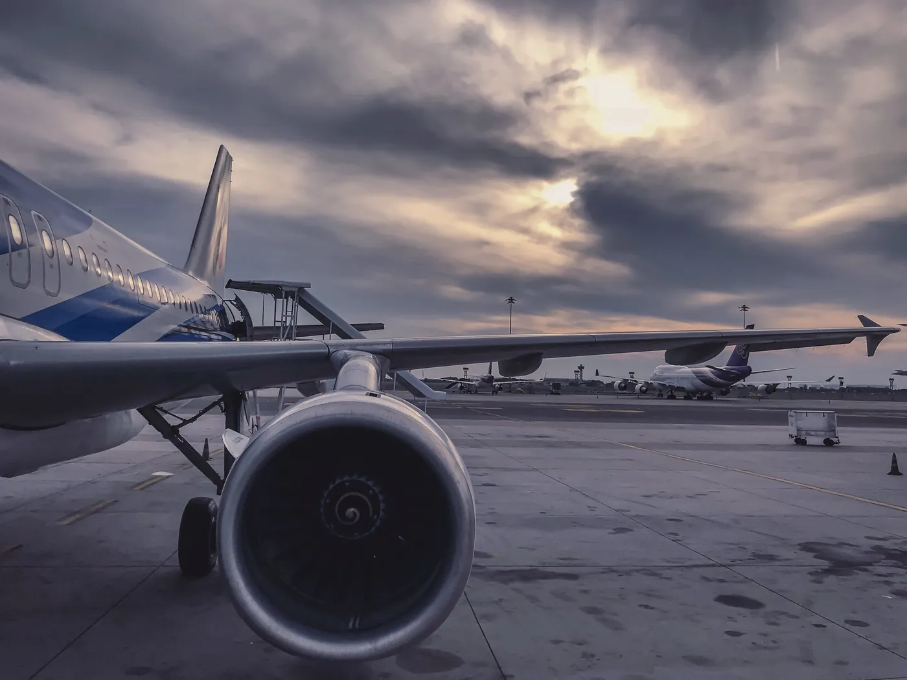

Macaristan üniversiteleri, uluslararası öğrencilere yüzlerce İngilizce program sunarken pilotaj eğitimi son yılların en çok ilgi gören seçeneklerinden biri olarak öne çıkar. Öğrenciler, akademik lisans eğitimi ile uygulamalı uçuş eğitimini aynı program kapsamında tamamlayarak mezuniyetlerinde hem üniversite diplomasına hem de profesyonel pilotluk kariyerine yönelik gerekli yetkinliklere sahip olur.
Hun Education olarak, pilotaj eğitimi almak isteyen öğrencilerimizin üniversite başvurularını her yıl titizlikle yürütüyoruz. Uygun programın belirlenmesinden sağlık sertifikasına, kabul sürecinden uçuş eğitimine kadar tüm aşamaları öğrencilerimizle birlikte planlıyor ve sürecin her adımında yanlarında oluyoruz.
Bu sayfada Macaristan'da pilotaj eğitiminin neden öne çıktığını, hangi üniversitelerde okutulduğunu, ücretlerin gerçekte neyi kapsadığını ve başvurudan önce hazırlamanız gerekenleri anlatıyoruz.

Neden Macaristan?
Pilot olmak isteyen bir öğrencinin önünde genellikle üç yol bulunur: havayollarının kadet programları, üniversitelerin havacılık bölümleri ya da özel uçuş okulları. Bu yolların her birinin kendine göre bir bedeli var; kadet programları uzun süreli sözleşmeye bağlar, uçuş okulları ise yüksek ücret karşılığında yalnızca lisans verir, elinizde bir diploma kalmaz.
Macaristan'ın farkı burada ortaya çıkar. Uçuş eğitimi entegre bir lisans programının içinde verilir; yani teorik dersler ve uçuş saatleri aynı takvim üzerinde ilerler ve mezuniyette elinizde hem ticari pilot lisansı hem de bir üniversite diploması olur. Sağlık sertifikanızın yenilenmediği bir durumda bile akademik dereceniz durur, bu da mesleğin doğası gereği önemli bir güvence.
Buna Macaristan'ın Türkiye'ye yakınlığı, eğitimin baştan sona İngilizce yürümesi ve Batı Avrupa'nın altında seyreden yaşam maliyeti eklenir. Ülke her yıl daha fazla Türk pilot adayını ağırlıyor ve gittiğinizde sizden önce gelmiş bir topluluk buluyorsunuz.





Hangi üniversitelerde okutulur?
Hun Education aracılığıyla başvurabileceğiniz iki program var ve ikisi birbirinden oldukça farklı. Budapeşte Teknoloji ve Ekonomi Üniversitesi (BME), ülkenin en köklü teknik üniversitesi olarak Professional Pilot programını yürütür. Dunaújváros Üniversitesi (UOD) ise sıfırdan ATPL'e uzanan uçuş eğitimini makine mühendisliğiyle birleştirir; ücretinin yüksek olmasının sebebi de bu ikili yapı. UOD, Budapeşte'nin güneyinde Tuna kıyısında yer alır ve yaşam maliyeti başkente göre belirgin şekilde düşük.
| Program | Üniversite | Süre | Yıllık ücret |
|---|---|---|---|
| Professional Pilot | BME, Budapeşte | 7 dönem | 29.500 € |
| Pilot Training (0 to ATPL) + Makine Mühendisliği | UOD, Dunaújváros | 7 dönem | 66.800 € |
| BSc Makine Mühendisliği (uçuş eğitimi yok) | UOD, Dunaújváros | 7 dönem | 3.950 € |
Tablodaki üçüncü satırı ölçek vermek için ekledik: aynı mühendislik diploması, uçuş eğitimi olmadan yılda 3.950 €. Aradaki farkı yaratan şey doğrudan uçmanın kendisi.
İki programı yan yana koyalım, bütçenize ve hedefinize uyanı birlikte seçelim. Ön Görüşme Al
Ücretler ve neyi kapsar

Pilotaj, kataloğumuzda ücretin mutlaka açılması gereken tek program; çünkü buradaki rakam alışıldık anlamda bir öğrenim ücreti değil. Yıllık ücret hem teorik dersleri hem simülatör çalışmalarını hem de lisansın gerektirdiği uçuş saatlerini kapsar. Bir mühendislik diplomasının kat kat üzerinde olmasının sebebi tek başına uçuş saatleri.
Ücretin dışında kalan tek önemli kalem uçuş sağlık sertifikası; bu belge kabulden önce alınır ve eğitim boyunca periyodik olarak yenilenir. Yaşam giderlerinizi de ayrıca planlamanız gerekir, Dunaújváros'ta bu kalem Budapeşte'ye göre gözle görülür şekilde düşük.
Ücretin neyi kapsadığına dair yazılı dökümü üniversiteden sizin adınıza biz istiyoruz: kaç uçuş saati dahil, fazlası gerekirse ne olur, sağlık sertifikası ve yenilemeleri ücretin içinde mi. Böylece iki üniversiteyi aynı ölçüyle karşılaştırıyor, sonradan sürprizle karşılaşmıyorsunuz.
Başvurmadan önce hazırlamanız gerekenler

Pilotaj başvurusunu diğer bölümlerden ayıran birkaç adım var ve bunları doğru sırayla yapmak zaman kazandırır. Sıralama şöyle işler:
Class 1 uçuş sağlık sertifikası
Yetkili hekimden alınır ve her şeyden önce gelir. Pilotaj başvurusunun en sık durduğu nokta burası olduğu için ilk adımı buraya koyuyoruz.
İngilizce yeterliliği
Hem derece için hem de havacılık telsiz iletişimi için ayrı ayrı değerlendirilir. Seviyeniz henüz yetmiyorsa hazırlık programıyla tamamlıyorsunuz.
Yetenek değerlendirmesi
Üniversitenin uyguladığı, eğitimin varsaydığı koordinasyon ve durumsal muhakemeyi ölçen sınav.
Akademik dosya
Apostilli diploma, transkript, pasaport ve İngilizce özgeçmiş; diğer programlarda olduğu gibi.
Kabulden sonra eğitim iki koldan birlikte ilerler. Akademik tarafta aerodinamik, meteoroloji, seyrüsefer, hava hukuku ve insan performansı işleniyor; uçuş tarafında ise simülatörden gözetimli uçuşa geçerek lisansın gerektirdiği saatleri biriktiriyorsunuz. İkisi paralel yürüdüğü için program üç değil üç buçuk yıl sürüyor, ama derste öğrendiğinizi aynı dönem havada pekiştiriyorsunuz.
Sık sorulan sorular
Profesyonel pilotluk BSc'si akademik dereceyle uçuş eğitimini birleştirip ticari pilot lisansına yönelir. Lisansın tipi, yetkilendirmeler ve uçuş saati sayısı üniversite ile havacılık otoritesi tarafından belirlenir ve değişebilir; taahhüt vermeden önce güncel yapıyı üniversiteden teyit edin.
Çünkü maliyeti öğrenim değil uçuş saatleri belirler. BME'de yıllık 29.500 €, UOD'nin birleşik programında 66.800 € bunu yansıtır; ücret yıllık olarak açıklanır ve uçuş eğitimini kapsar.
Yetkili hekimden alınacak Class 1 uçuş sağlık sertifikası. Bunu başvurudan sonra değil önce değerlendirin: pilotaj başvurusunun en sık burada durduğunu görüyoruz.
Kaynaklar ve doğrulama
- Program yapısı ve ücretler Dunaújváros Üniversitesi'nin yayınlanan koşullarından derlenir ve her akademik yıl gözden geçirilir.
- Lisans yapısı, gerekli uçuş saati ve sağlık standartları havacılık otoritesince belirlenir ve değişebilir; üniversitenin güncel dokümanı esastır.
- Uçuş saatleri uçuldukça faturalandığı için program toplamı öğrenciden öğrenciye değişir.
Değişiklik günlüğü
- : İçerik editoryal ve SEO denetiminden geçirildi; kaynak beyanları güncellendi.
- : Sayfa yayına alındı; ücret aralıkları, başvuru takvimi ve giriş sınavı şartları güncel veriyle yazıldı.